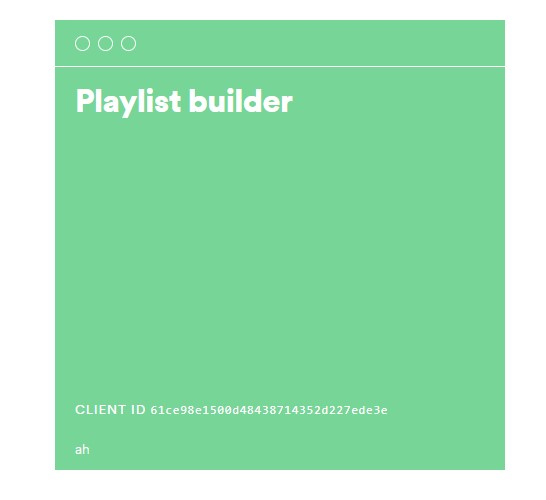

Archive | Spotify API
Spotify Playlist Generator
Built using Spotify for Developers, this script creates a new playlist each time Release Radar refreshes and copies the songs into a dated playlist.


The reason for building it was simple: Release Radar updates every week, and I wanted a way to keep those playlists instead of losing them to the next refresh.
It was also a good way to learn more about Spotify's developer platform while building something I would actually use personally.